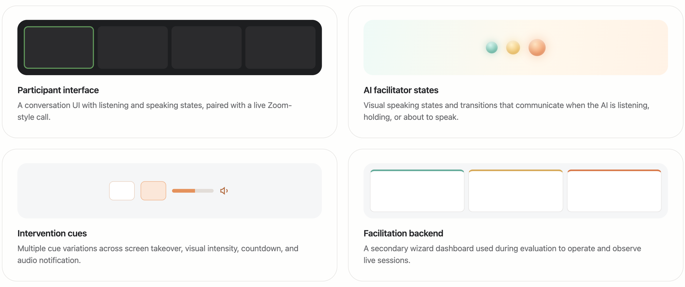

CueTurn
Designing how AI takes the floor in live group conversations.
The Premise
Voice AI is getting better at live conversation, but most systems still follow a familiar pattern: a person speaks, and the AI responds. CueTurn explored a different model:
How should AI intervene in a live group conversation?
That shift makes the interaction much more complex. The system must listen across multiple people, recognize when intervention is actually useful, and step in without breaking the group’s flow. Unlike a human facilitator, AI does not begin with shared social legitimacy. It has to earn trust in the moment while still being clear enough to influence the conversation.
We centered on anticipatory cues to test how they prepare the group for AI intervention, examining:
How anticipation signals shaped noticeability and perceived disruption.
How timing and delivery style influenced participant response to AI intervention.
The Prototype
CueTurn is a research prototype exploring how an AI facilitator can join live group conversations at the right moment, with the right level of visual intensity, without disrupting the group’s flow or sense of agency.
System overview
CueTurn was a working prototype tested in live group discussion sessions. The system included:

What I explored
1. AI as assistant vs. facilitator
Explored how much authority the AI should have in conversation — from a lighter support role to a more active facilitator role.
2. Anticipation signal design
Explored how anticipation cues could make upcoming AI interventions noticeable without making them feel overly disruptive.
3. Meaningful vs. noisy variation
Used live studies to understand which distinctions users could actually perceive, and which variations added complexity without producing clearer interaction.
Process
Core design explorations focused on anticipation, interpretable differences, and how to evaluate an unfamiliar interaction model in live group settings.
Investigation 1: Anticipation signals
How do anticipation signals shape noticeability, disruption, and acceptance?
A core part of CueTurn was designing the anticipatory period before the AI spoke. I broke that period into two signaling moments:
- Hold — the AI intends to speak and is waiting for its turn
- Speak — the moment it is about to speak
From there, I explored three main design dimensions: screen occupancy, countdown explicitness, and audio notification.
What emerged
- Timing often mattered more than any single visual treatment
- Even subtle cues felt wrong when the AI misread the moment
- Anticipation could help signal intent before interruption
- Some explicit countdowns created pressure instead of cooperation
This shifted the design target from simply making the AI noticeable to balancing noticeability with perceived disruption.
Investigation 2: Narrowing the design space
How can we narrow the design space into interpretable differences?
CueTurn began with a broad design space: hold states, countdowns, audio cues, visual transitions, and AI representations. But not every variation produced a meaningful difference in use.
Through formative sessions, I found that some distinctions were too subtle for participants to reliably notice, too overlapping to interpret cleanly, or too complex to justify keeping in the study.
This pushed me to refine the design space around differences participants could actually react to. Countdown design shifted away from visual form alone and toward explicitness — whether the AI communicated timing with a visible number or a less explicit countdown. Later discussions pushed the design toward a clearer anticipation model built around the AI’s hold and speak moments.
This made the study more interpretable and the interaction model more coherent. Instead of preserving every possible variation, I narrowed the design space into dimensions that were both product-relevant and perceptible to users.
Designing the experimental study
CueTurn was evaluated through formative studies and live user testing with 120 total participants.
I designed the study structure used to evaluate the interaction, including the discussion format, post-session interview, and synthesis framework.
The formative co-design study paired a 30-minute group discussion with a 1:1 follow-up interview. That discussion period gave participants enough time to acclimate to an unfamiliar interaction model, reducing novelty effects and making their feedback on design differences more meaningful.
This let us study both live behavior and reflective feedback within the same system.
Supporting system design
Although secondary to the participant experience, I also designed the facilitation backend used during evaluation.
Early versions placed too much burden on the operator: manual typing, queue management, and too much live cognitive load. I iterated the backend toward clearer signal prioritization, better dismiss vs. act-now logic, and pre-generated categorized cues instead of manual typing.
This stayed secondary, but reinforced an important lesson: if the system behind the interaction breaks down, the participant experience does too.
Key Takeaways!
Key outcomes
- Shifted the design focus from isolated UI features to anticipation signal design
- Surfaced timing as a central factor in whether AI interventions felt disruptive or acceptable
- Narrowed a broad design space into more meaningful, testable differences
- Built and tested a working prototype in live group discussions
- Designed the study method used to evaluate this emerging interaction model
Reflection
CueTurn is redefining how I think about product design for AI. Working on it made me much more aware of the behavioral layer of these systems: when they should step in, how strongly they should ask for attention, and what makes their presence feel trustworthy instead of disruptive.
It also pushed me to work across the full arc of a project — from interaction design and study design to live research and synthesis into product decisions. That process is still shaping the kind of designer I want to become.